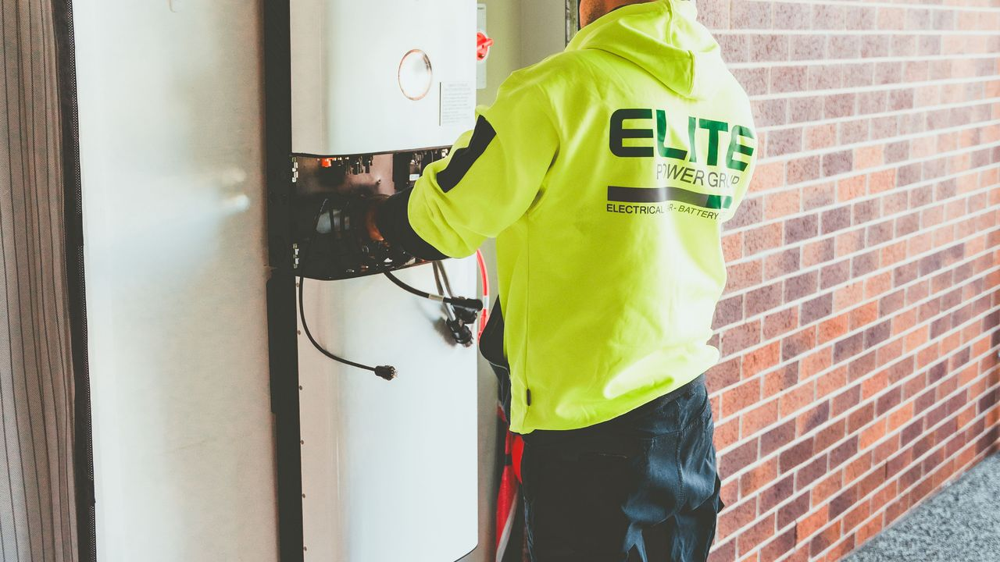

Solar panels can last 25 years or more, but the battery is a different story: it's a consumable that slowly wears with every charge and discharge. How long it lasts comes down to two things — the battery chemistry, and how well you treat it.
Two ways to measure lifespan
Battery life is quoted two ways. Cycle life is how many full charge-discharge cycles it can do before its capacity fades (usually to 80% of new). Calendar life is how many years it lasts regardless of use, since batteries age with time too. Whichever runs out first ends the battery's useful life — heavy daily cycling is limited by cycles, light backup use is limited by calendar age.
Lithium vs lead-acid
Chemistry is the biggest factor. Lithium (LiFePO4) lasts far longer than traditional lead-acid, and lets you use more of its capacity each cycle:
| Type | Typical cycle life | Typical years | Usable per cycle |
|---|---|---|---|
| Lithium (LiFePO4) | 3,000–6,000+ cycles | 10–15 years | 80–90% |
| Lead-acid (AGM/gel) | 600–1,200 cycles | 4–7 years | ~50% |
| Lead-acid (flooded) | 500–1,000 cycles | 3–6 years | ~50% |
Lithium costs more upfront, but because it lasts several times longer and delivers more usable energy per cycle, its cost per usable kilowatt-hour over its life is usually lower. See the full lithium vs lead-acid comparison.
What wears a battery out
Two batteries of the same type can last very different lengths of time depending on how they're used. The main things that shorten life are:
Deep discharging — regularly draining a battery past its recommended depth of discharge is the fastest way to age it. Heat — high temperatures accelerate the chemical wear, so a battery in a hot space ages faster. Poor charging — overcharging or the wrong charge profile damages cells, which is why a proper charge controller matters. Sitting discharged — leaving a battery empty for long periods, especially lead-acid, causes lasting damage.
From the field
From what I've seen on projects, lithium batteries last far longer than lead-acid. The two things that shortened battery life the most were deep discharging and high heat — I noticed the heat effect clearly in summer, when batteries kept in hot spaces aged faster than the same batteries kept cool.
How to make them last longer
You have a lot of control over battery life. Stay within the recommended depth of discharge, keep the bank cool and ventilated, use a proper charge controller, and size the bank generously so it isn't stressed to the limit every day. Sizing for a few days of autonomy not only rides out cloudy spells but also means shallower daily discharges — which directly extends life.
Related tools
Size your bank with the battery calculator, plan backup days with the days of autonomy calculator, convert capacity with the battery Ah to kWh converter, and compare chemistries in lithium vs lead-acid.
Frequently asked questions
How long do solar batteries last?
Lithium (LiFePO4) typically lasts 10–15 years or 3,000–6,000+ cycles; lead-acid lasts 3–7 years or ~500–1,200 cycles. Deep discharge and heat shorten both.
How long do lithium solar batteries last compared to lead-acid?
Far longer — 3,000–6,000+ cycles vs 500–1,200, and more usable energy per cycle, so lower cost per usable kWh over its life despite the higher upfront price.
What shortens solar battery life?
Deep discharging, high temperatures, overcharging or poor charging, and leaving a battery sitting empty.
How can I make my solar batteries last longer?
Stay within the recommended depth of discharge, keep them cool, charge them properly, size the bank generously, and don't leave them discharged.